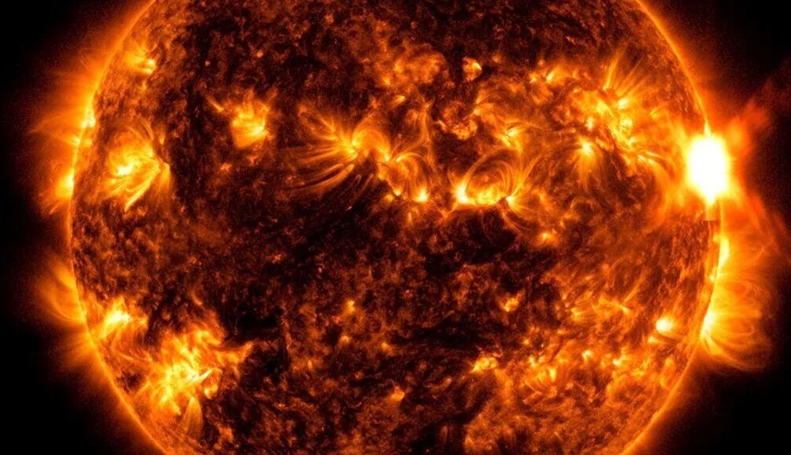

3 ÜLKEDE RADYO KESİNTİSİ
İlk patlama dün gece 2 Mayıs tarihinde güneşin en güçlü kategori patlaması olan X-sınıfı güneş
patlamasını yaymasıyla meydana geldi ve Avustralya, Japonya ve Çin'in büyük bölümünde kısa
süreli
radyo kesintilerine neden oldu.
Bir sonraki patlama bu sabah 3 Mayıs tarihinde ikinci en güçlü kategori patlaması olan M sınıfı
güneş patlamasının zirve yapmasıyla gerçekleşti.
Spaceweather'ın haberine göre, X-patlamasından kısa bir süre sonra ABD Hava Kuvvetleri, "bir
koronal
kütle atımının ön kenarındaki şoklanmış gaz tarafından yayılan bir tür doğal radyo sinyali" olan
Tip
2 güneş radyo patlamasını bildirdi.
GÜNEŞ PATLAMASI KAÇ KATEGORİYE AYRILIR?
Güneş patlamaları, Güneş'te aniden açığa çıkan büyük enerji patlamalarıdır. Patlama gücüne ve
etkisine göre A, B, C, M ve X olarak 5 kategoriye ayrılırlar. M ve X sınıfı patlamalar ise en
tehlikeli olanlardır
Dünya'daki radyo iletişimi ve elektrik şebekeleri üzerinde olumsuz etkilere neden olan Güneş
patlamaları 11 yıllık bir döngüye sahiptir.